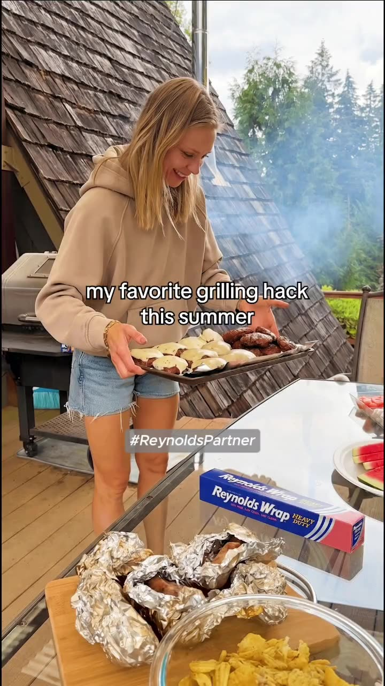
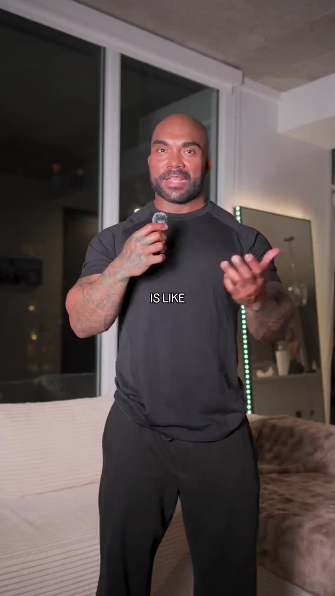
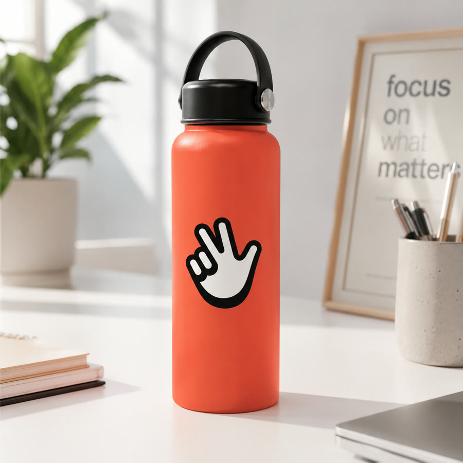

Creator-Led
Podcast
A clipped podcast moment that delivers the pitch like overheard conversation, with credibility built in.
Explore our library of high-performing creator concepts, tested and proven across paid social.
Turn a single brief into a full slate of concept tests across creators, hooks, and formats, so winners surface faster and cheaper.

Slideshow
Spokes Person
Powered by CreatorsOne agile creative partner, from the first brief to a full library of platform-ready performance content.
Rapidly test proven concept formats across hooks, creators, personas, and angles to find what converts.
↗A vetted creator network delivering native, brand-safe content purpose-built for paid social.
↗Double down on winning ads with fast iterations, new hooks, and fresh creators to extend performance.
↗